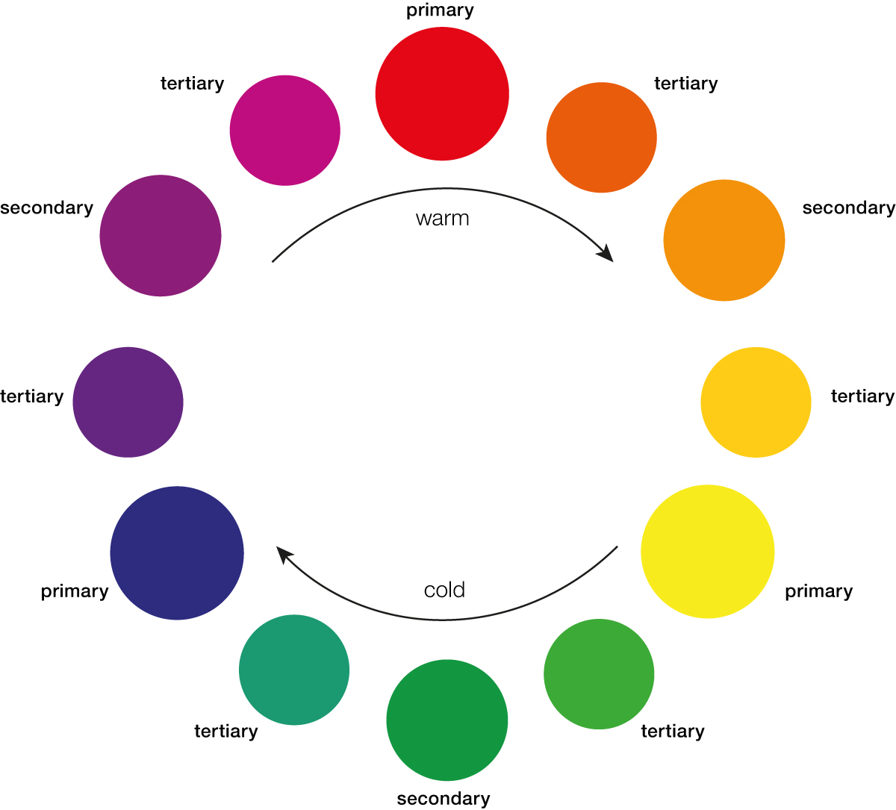
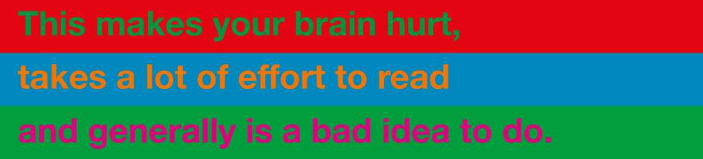
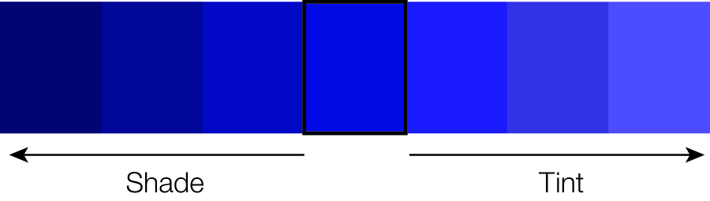

Colors
Becoming Visual
Color theory
Color theory provides guidance on how to mix different colors together, and what effects these mixes can have on the viewer. An understanding of color theory helps to evaluate which colors work together, and which don’t.
The color wheel depicts the color spectrum in a circle and is made up of three different types of colors: Primary, secondary, and tertiary colors. The primary colors are red, yellow, and blue. They are called primary for a couple of reasons. No two colors can be mixed to create a primary color. Primary colors cannot be created by mixing together other colors, but only through the use of natural pigments.
The secondary colors are orange, green, and purple. Secondary colors are created by mixing equal parts of two primary colors. Tertiary colors are created by mixing equal parts of a secondary color and a primary color together. There are six tertiary colors; red-purple, red-orange, blue-green, yellow-green, blue-purple, and yellow-orange. When naming the tertiary colors, the primary color is always named first.
The color wheel can be divided into ranges that are visually active (warm colors) or passive (cold colors). Active colors appear stronger next to cold colors.

Color Schemes
Color schemes are practical guidlines on how to mix colors together.
Monochromatic means one (mono) color (chroma). A monochromatic color scheme consists of only one color and its shades and tints.
Analogous colors are next to each other on the color wheel. They can have an intense yet harmonic effect.
Complementary colors are found directly across from each other on the color wheel. They provide a strong contrast.
Color triads are three colors that are equally spaced apart from each other on the color wheel.
Complementary Colors
Complementary Colors are located opposite each other on the color wheel. Every visual presentation involves figure-ground relationships. This relationship between a subject (or figure) and its surrounding field (ground) will evidence a level of contrast; the more an object contrasts with its surrounds, the more visible it becomes.

Complementary colors can have interesting and intense effects. This may be a desirable effect, or a problem if there is text involved.

Color Values
Value is the darkness or lightness of a color. When dealing with pure color (hue), value can be affected by adding white or black to a color. Adding white to a color produces a tint. Adding black to a color produces a shade.

Color Blindness
Color blindness is the inability to differentiate certain colors. It comes in different forms, but the most common is red-green color blindness. There are multiple causes, but the most common cause is a mutated X Chromosome. Because men have only one X chromosome, they are more often affected by colorblindness Around 8% of adult men suffer from color blindness. Women on the other hand have two X chromosomes, which is why only few women are color blind.
The most common type of color blindness is red green color blindness, this type affects about 95% of all color blind people. It means that the affected person can either not see the color red or green or both as colors but only as shades of grey, and hence not distinguish between them. The remaining 5% of colorblindness is made up of blue yellow color blindness, and less commonly – total color blindness.
Below you can see an R package that tests graphic output for different types of color blindess. The first figure shows a graph as seen by a non-colorblind person. The second figure shows how different types of color blindness affect the vision of the same graph. Link to the R package colorblindr


Color Systems
SUBTRACTIVE COLOR
The subtractive method is applied when we paint or print colors. As you know from painting, if you add more and more layers of colors, the shade will get darker and end in black. This is where the CMYK (Cyan, Magenta, Yellow and Key Color) color system is used.
ADDITIVE COLOR
On digital screens, colors are created with light. If we do not have any light, we see black. The more colors we add, the lighter it gets and ends in white. This is when the RGB color system is applied. Most pictures you find on the internet are in the RGB mode and thus not printable. Although most modern office printers automatically convert the colors to CMYK mode, you need to take the color mode into consideration when submitting to a professional printer.
Tools to help you choose your colors
The following websites help you choose a harmonic color palette: